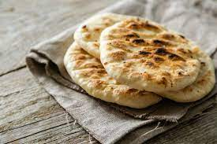

Pita Bread

Ingredients
- 2 teaspoons active dry yeast
- ½ teaspoon sugar
- 35 grams whole-wheat flour (1/4 cup), preferably freshly milled
- 310 grams unbleached all-purposed flour (2 1/2 cups)
- 1 teaspoon kosher salt
- 2 tablespoons olive oil
Instructions
- Make sponge: Put 1 cup lukewarm water in a large mixing bowl. Add yeast and sugar. Stir to dissolve. Add the whole-wheat flour and 1/4 cup all-purpose flour and whisk together. Put bowl in a warm (not hot) place, uncovered, until mixture is frothy and bubbling, about 15 minutes.
- Add salt, olive oil and nearly all remaining all-purpose flour (reserve 1/2 cup). With a wooden spoon or a pair of chopsticks, stir until mixture forms a shaggy mass. Dust with a little reserved flour, then knead in bowl for 1 minute, incorporating any stray bits of dry dough.
- Turn dough onto work surface. Knead lightly for 2 minutes, until smooth. Cover and let rest 10 minutes, then knead again for 2 minutes. Try not to add too much reserved flour; the dough should be soft and a bit moist. (At this point, dough may refrigerated in a large zippered plastic bag for several hours or overnight. Bring dough back to room temperature, knead into a ball and proceed with recipe.)
- Clean the mixing bowl and put dough back in it. Cover bowl tightly with plastic wrap, then cover with a towel. Put bowl in a warm (not hot) place. Leave until dough has doubled in size, about 1 hour.
- Heat oven to 475 degrees. On bottom shelf of oven, place a heavy-duty baking sheet, large cast-iron pan or ceramic baking tile. Punch down dough and divide into 8 pieces of equal size. Form each piece into a little ball. Place dough balls on work surface, cover with a damp towel and leave for 10 minutes.
- Remove 1 ball (keeping others covered) and press into a flat diskc with rolling pin. Roll to a 6-inch circle, then to an 8-inch diameter, about 1/8 inch thick, dusting with flour if necessary. (The dough will shrink a bit while baking.)
- Carefully lift the dough circle and place quickly on hot baking sheet. After 2 minutes the dough should be nicely puffed. Turn over with tongs or spatula and bake 1 minute more. The pita should be pale, with only a few brown speckles. Transfer warm pita to a napkin-lined basket and cover so bread stays soft. Repeat with the rest of the dough balls.
Original Recipe Here